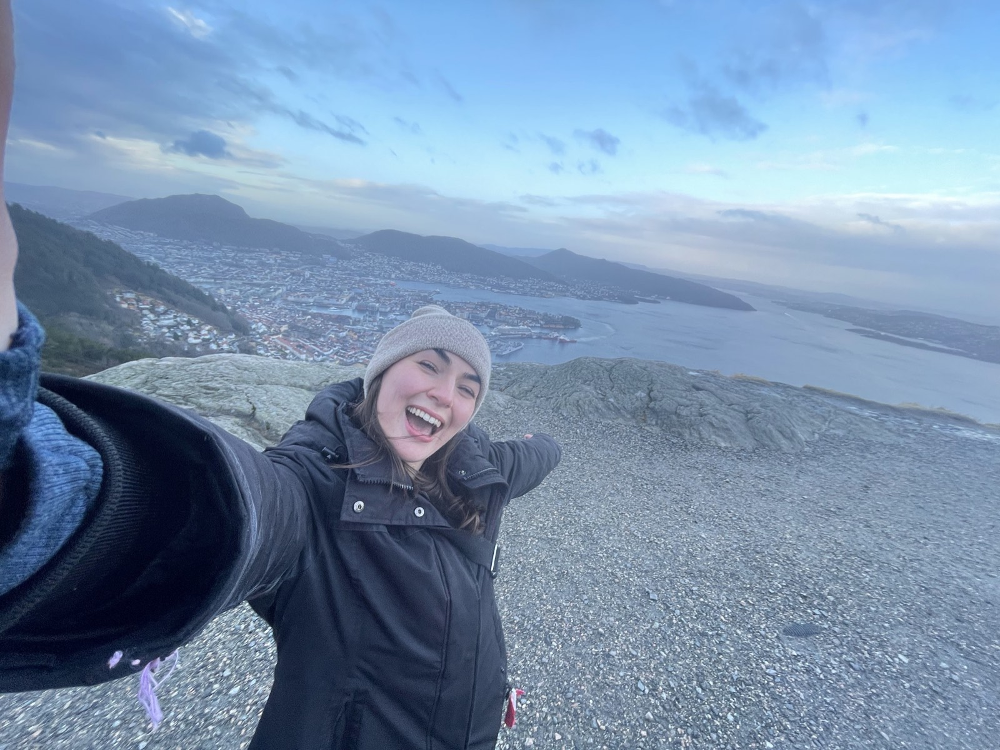
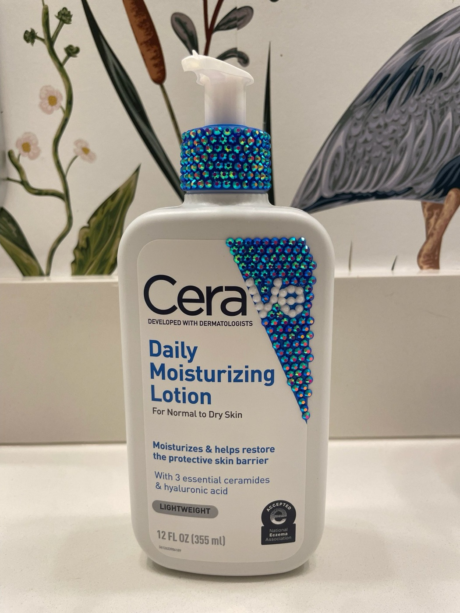
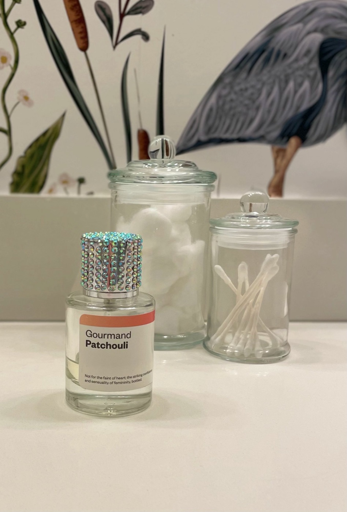
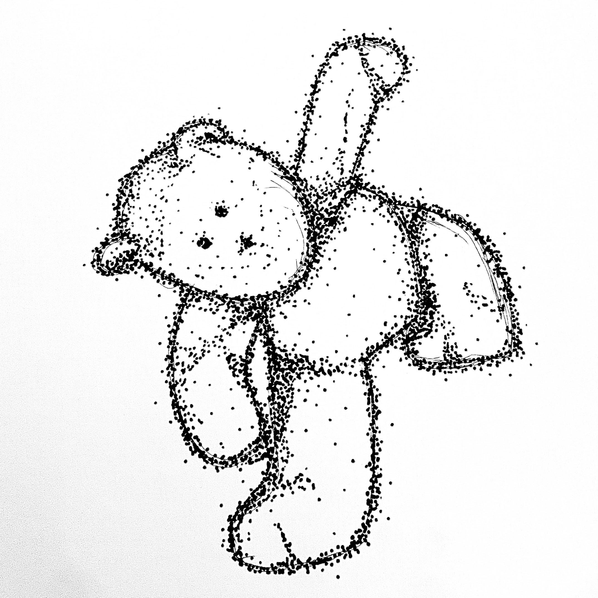
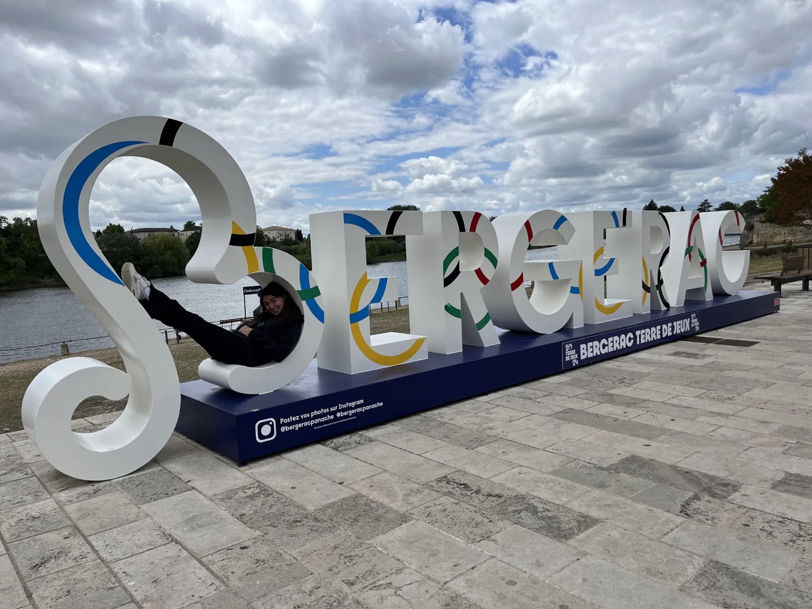
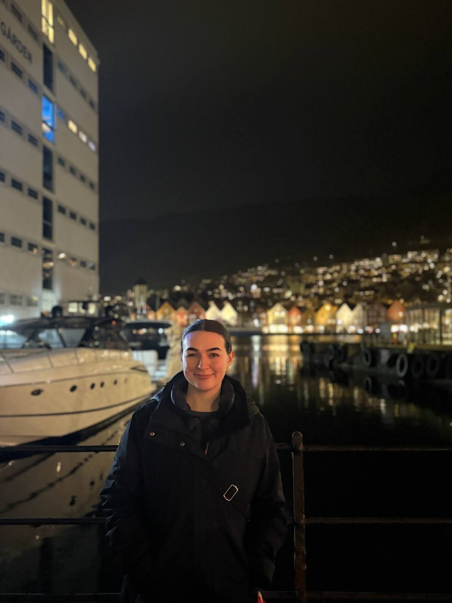
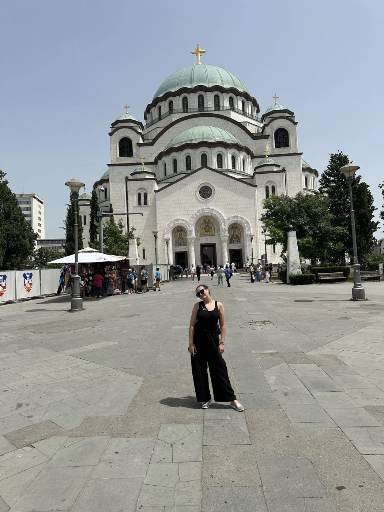

About

-
Code
I started in computer science. It showed me how systems work, but not always how people experience them.
-
Design
So I moved into UX design at the University of Michigan School of Information. Designing for real clients revealed the next gap: a great design still has to make sense for the business.
-
Business
So I added a Master of Management at Michigan Ross.
-
Product
Each field filled in something the last one left out. Now I work where all three meet, which is why I'm drawn to product roles where research, feasibility, and business goals all shape the answer.
What I bring
Research to design, end to end
I turn surveys, interviews, and usability tests into prioritized designs that are ready to test.
Systems thinking, in Figma and beyond
Whether it's a component library or a company's billing workflow, I find the structure underneath and design it to scale.
Business fluency
I scope work to real constraints and bring stakeholders with different goals to one answer.
Technical literacy
A computer science minor lets me talk feasibility with engineers, and I use AI tools to streamline my work from first idea to finished build.
Education
- 2026
Master of Management, High Distinction
University of Michigan, Ross School of Business
- 2025
BS in User Experience Design, minor in Computer Science, University Honors
University of Michigan, School of Information
- 2025
BA in Arts and Ideas in the Humanities and Modern Greek Language and Culture, University Honors
University of Michigan, Residential College
Outside of work
One theme runs through my life: I've always been interested in many things at once (as you can probably tell from my variety of majors). Some days I can't pick a hobby because I'm excited about all of them.
I trained in ballet for most of my childhood and loved learning something that was both incredibly technical and required artistry to be complete. Recently I have revisited my dance past and am learning West Coast Swing, which has proved to be as challenging as it is fun.
I love crafting, and my current obsession is bedazzling. I also enjoy a good book with a cup of coffee, and I draw. Some of my work is on my Play page. However, if I had no limitations, I'd travel somewhere new and take in a different culture as often as I could.

Bedazzled lotion 
Bedazzled perfume Books 
Drawing 
Bergerac, France 
Bergen, Norway 
Belgrade, Serbia
Let's talk.
I'm looking for full time product design and associate PM roles in Chicago or remote.